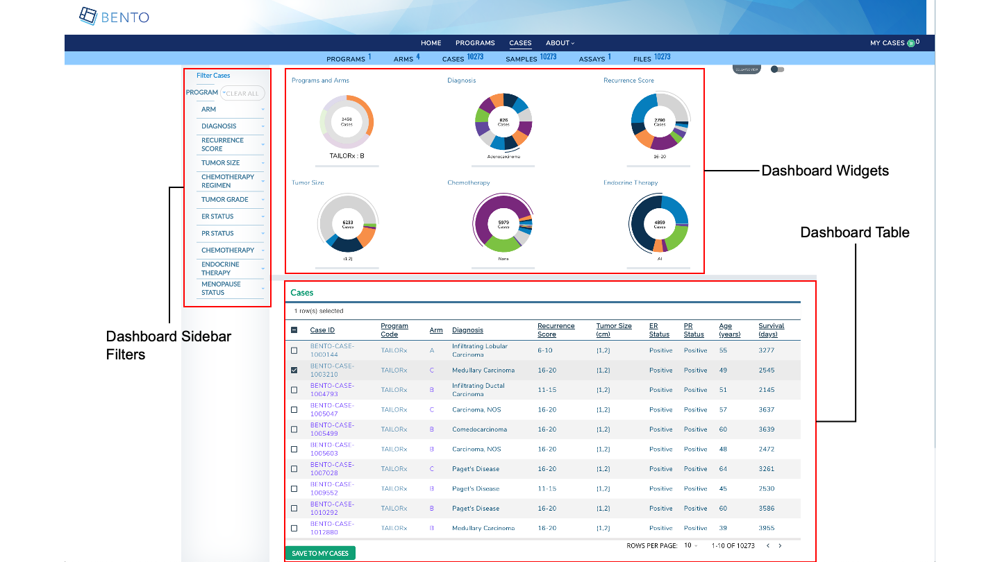

7. Dashboard¶
The Dashboard provides the end user with several capabilities (a) filter data entities of in interested via faceted search (b) view graphical summaries of data entities and (c) select data entities for further exploration.

Dashboard. Displayed are the configurable elements of a Bento Dashboard. These are: Dashboard Sidebar Filters, Dashboard Widgets and Dashboard Table.
7.1. Prerequisites¶
The files that specify the configuration parameters of the Dashboard are stored in the GitHub
https://github.com/CBIIT/bento-frontend(representing your GitHub username asYOUR-USERNAME). Create a local clone of your fork into a local directory, represented in these instructions as$(src).Configuration Parameters for Dashboard elements can be specified in the file:
$(src)/bento-frontend/src/bento/dashboardData.js.All images and icons that you use in your Bento instance should be accessible via a public url.
Please review the list of GraphQL queries to select query type(s) that return your data of interest.
7.2. Dashboard Sidebar Filters¶
The Dashboard Sidebar Filters allow an end user to search for data of interest by applying multiple filters, based on faceted classification, of stored data entities.
You can add a maximum of 12 filters. If you add more than 12 filters, Bento will display only the first twelve filters, without any warning or error message.
7.2.1. Configuring the Dashboard Sidebar Filters¶
Open
$(src)/bento-frontend/src/bento/dashboardData.js.Under
facetSearchDataadd an object {label: , field: , api: , datafield: , show: ,} to represent your filter.Set the field
labelto the display label for your filter.Set the field
fieldto the specific field in the GraphQL API query that is associated with your filter.Set the field
apito the GraphQL API query that returns data for your filter.Set the field
datafieldto cross-reference the API query that responds to your filter. For example, if your filter drives a widget that displays data fromresponsive_api_queryand it drives a column in the Dashboard table that displays data fromresponsive_api_query, then set thedatafieldtoresponsive_api_query.Set the field
showto ‘true’ to display the filter or to ‘false’, otherwise.Update
GET_DASHBOARD_DATA_QUERYwith the all GraphQL API queries and fields that are associated with your filters.
Example:
...
export const facetSearchData = [
{
label: '<Filter Label>',
field: '<API query field>',
api: '<GraphQL API query>',
datafield: '<responsive_api_query>',
show: <'true|false'>,
},
...
]
...
export const GET_DASHBOARD_DATA_QUERY = gql`{
GraphQL API query{
API query field
}
}
7.3. Dashboard Widgets¶
Dashboard Widgets provide a graphical summary of the key data entities in your data sharing platform. In this version of Bento, you can add 3, 4 or 6 widgets. If you add more than 6 widgets, Bento will display the first widgets without any error or warning message.
7.3.1. Configuring the Dashboard Widgets¶
Open
$(src)/bento-frontend/src/bento/dashboardData.js.Under
widgetsDataadd an object {type: ,label: , dataName: , datatable_field: ,show:} to represent your widget.Set the field
typeto the type of widget you want to display. Valid values are ‘donut’ and ‘sunburst’.Set the field
labelto the display label for your widget.Set the field
dataNameto the name of the GraphQL API query that returns data for your widget.If your widget is of type ‘donut’, set the field
datatable_fieldto the specific field in the GraphQL API query that returns data for your widget.Sunburst widgets display two types of data within a single plot. If your widget is of type ‘sunburst’, set the fields
datatable_level1_fieldanddatatable_level2_fieldto the specific fields in the GraphQL API query that returns data for your sunburst. The fielddatatable_level1_fielddrives the inner ring of of the sunburst. The fielddatatable_level2_fielddrives the outer ring of of the sunburst.Set the field
showto ‘true’ to display the widget or to ‘false’, otherwise.Enter all GraphQL API queries that drive the widgets in
GET_DASHBOARD_DATA_QUERY.
Example:
...
export const widgetsData = [
{
type: 'sunburst',
label: '<Widget Label>',
dataName: '<GraphQL API query that returns data for widget>',
datatable_level1_field: '<GraphQl API query field that returns data for inner ring of sunburst>',
datatable_level2_field: '<GraphQl API query field that returns data for outer ring of sunburst>',
show: '<true|false>',
},
{
type: 'donut',
label: 'Diagnosis',
dataName: '<GraphQL API query that returns data for widget>',
datatable_field: '<GraphQl API query field that returns data for donut>',
show: '<true|false>',
},
...
]
...
export const GET_DASHBOARD_DATA_QUERY = gql`{
GraphQL API query{
API query field
}
}
7.4. Dashboard Table¶
The Dashboard Table can be configured to list key data entities in your data sharing platform along with a list of key data entity attributes. In the Bento reference implementation the Dashboard Table list the cases (or study subjects) in the program.
You can add a maximum of 10 columns to the Dashboard Table. If you add more than 10 columns, Bento will display only the first ten filters, without any warning or error message.
7.4.1. Configuring External Icon Link¶
Open
$(src)/bento-frontend/src/bento/dashboardData.js.Under
externalLinkIcon:Set the field
srcto the URL for the External Icon image of your choice.Set the field
altto the ALT tags you want to set for you External Icon.
Example:
...
export const externalLinkIcon = {
src: '<URL for the External Icon of your choice.>',
alt: '<ALT tags>',
};
...
7.4.2. Configuring the Dashboard Table¶
Open
$(src)/bento-frontend/src/bento/dashboardData.js.Under
dashboardTable:Set the field
tableTitleto a Table Title of your choice.To add a column, add an object {dataField: ,header: ,sort: ,link: ,primary: ,display: ,} to
tableData.Set the field
dataFieldto the GraphQL API query field that returns the data for your column.Set the field
headerto the column header for your column.Add a
sortfield, if the Dashboard Table is to be sorted by the values of this column.Set the fieldsetto ‘asc’ to sort table by ascending order on the column values, ‘desc’ to sort in the descending order.Set the field
linkto an internal or external link that needs to be embedded into the column value. See below for additional information on adding internal and external links. Links are optional.Add a
primaryfield and set it to ‘true’ if values in this column are to be used to add the listed data entities to the Cart. For example, if you wish to select cases, in a Dashboard Table displaying cases, by the Case ID column to add to the cart, then the column storing case ids should have aprimaryfield and it should be set to ‘true’.Set the field
displayto ‘true’ if you wish to display the column and to ‘false’, otherwise.
Add your GraphQL API queries to
GET_DASHBOARD_TABLE_DATA_QUERY.
Example:
...
export const dashboardTable = {
tableTitle: 'Cases',
tableData: [
// A maximum of 10 columns (tableData) are allowed
{
dataField: 'subject_id',
header: 'Case ID',
sort: 'asc',
link: '/case/{subject_id}',
primary: true,
display: true,
},
...
]
}
...
export const GET_DASHBOARD_TABLE_DATA_QUERY = gql`{
}
7.4.2.1. Internal Links in the Dashboard Table.¶
links starting with ‘/’ are considered as internal links.
Internal links shall be opened in the same tab.
Dynamic links can be generated by passing a valid table field to ‘{}’. For example, ‘/program/{program_id}’ shall link to ‘program/NCT00310180’.
7.4.2.2. External Links in the Dashboard Table.¶
External links shall start with ‘http://’ or’https://’.
External links shall show-up with ‘externalLinkIcon’.
External link shall be opened in a new tab.
Dynamic links can be generated by passing a valid table filed to ‘{}’. For example, ‘https://pubmed.ncbi.nlm.nih.gov/{pubmed_id}’ shall link to ‘https://pubmed.ncbi.nlm.nih.gov/29860917/’.
7.5. Suggested Best Practice¶
Dimension of the External Link Icon = 16 X 16 pixels.
All images should have a resolution >= 72 ppi and should be in the PNG format.